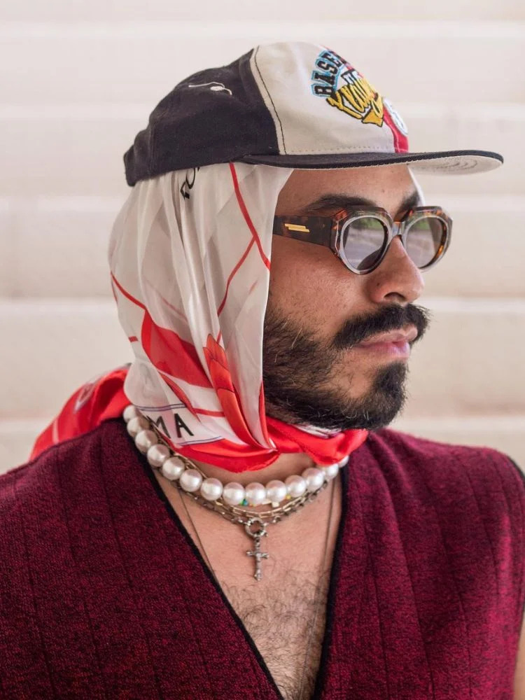
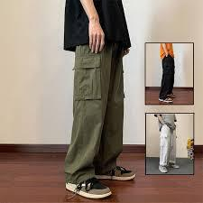
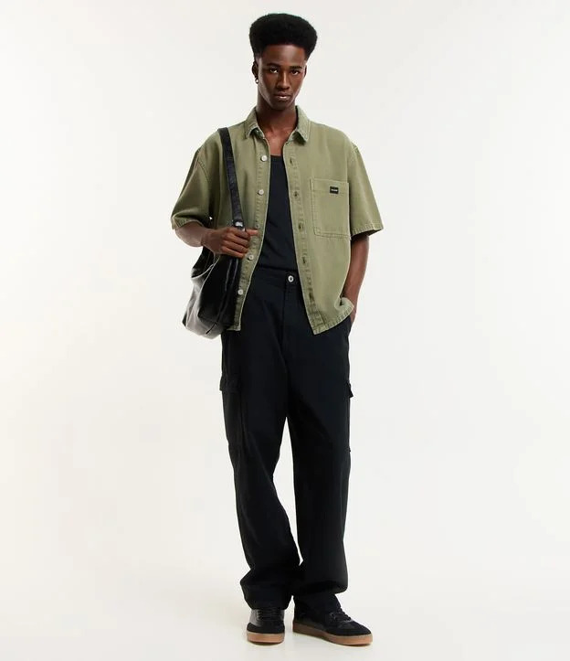
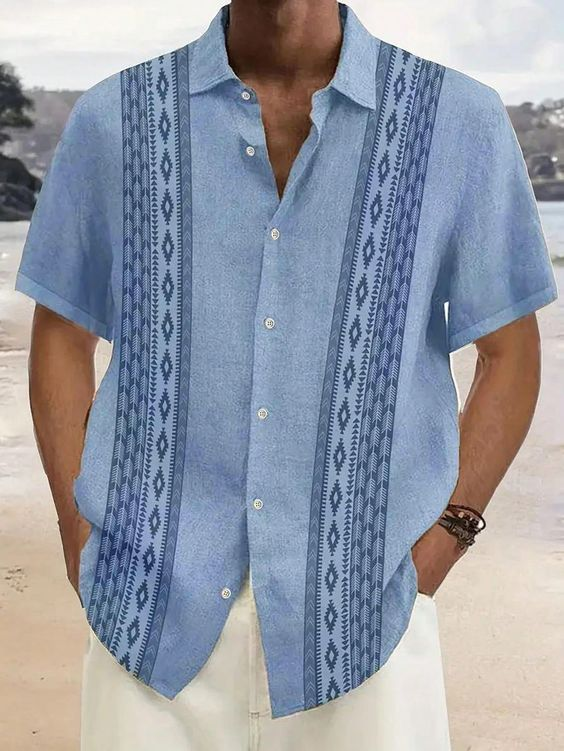
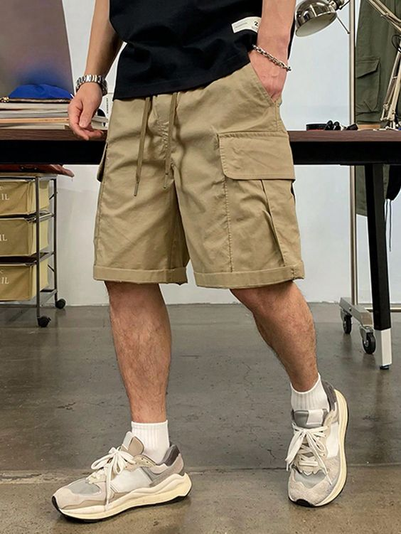

Top tendências de moda masculina para Primavera:

1- Lenço
Os Lenços voltaram com tudo nessa primavera, com essa onda de calor nunca foi tão necessario se proteger,
visando o estilo e a moda fashionista homens de todas as partes do mundo aderiram a esse acessorio tão versatil.
O lookinho mais utilizados por todos tem sido o lenço com bone trazendo essa vibe streat para um item tão classico.

2-Calça Cargo Larga
Apesar de ter sofrido muitas criticas no passado, a calça cargo vem sendo muito requisitada não só pelos famosos streetweer,
mas tambem pelo mundo dos Offices e fashionistas mais classicos, por ser uma peça que tras todo esse despojo muitos tinham
seus preconceitos mas os tempos mudaram e com esse calor a procura por tecidos mais "respiraveis" se tornou constante!

3-Camisa Boxy em Sarja
Conhecida por suas grandes mangas e por ter muitas utilidas, a camisa boxy em sarja teve um aumento já esperado de busca no
no mercado pelo simples fato de poder ser utilizada não so como camisa mas tambem como jaqueta e colete, essa peça pode compor diversos
looks sejam eles para noite ou para o dia, recomendo fortemente ter uma peça como essa em seu guarada roupa!

4-Estampas
Uns acham brega, outros amam, mas as estampas voltaram com tudo nessa primavera trazendo cores e vivacidade assim como o florecer das
flores, as estampas trazem charme, cor e diversão porem peças estampadas não são para qualquer um, é preciso ter muito confiança e
saber combinar pois um passo em falso e tudo vira um carnaval.

5-Shorts Curto
Junto ao calor primaveriu vem os shorts, peças atemporais que nunca saem do cardapio de moda masculina, uma peça simples porem muito
versatil, a quem diga que nunca será considerada uma peça seria mas com a mudança no ambiente de trabalho muitos estão aderindo a essa
peça refrescante rsrs.